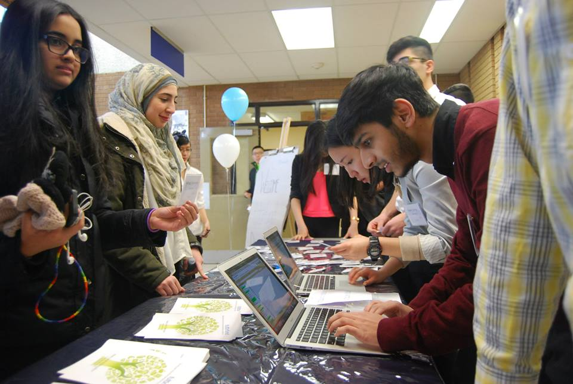

Our Story
FuturFund was founded in 2014 by Sara Raza and Katherine Tang, two high school seniors entering university. While we were excited for independence, we also realized that, like many of our peers, we lacked the skills necessary to effectively manage our finances. With a focus on financial literacy skills absent in the school curriculum, we decided to bridge the knowledge gap with FuturFund, a student-run, non-profit organization dedicated to equipping high school students with the skills to make sound financial decisions. Our goal is to provide the next generation with necessary tools and skills in order to make important financial decisions. We do this by connecting youth to inspiring educators and professionals and providing hands on experience through workshops and competitions.



Team

Katherine Tang
Co-Founder
Katherine is a first year student studying Psychology at Western University. An aspiring businesswoman, Katherine has a vision of being a social entrepreneur. She is a huge fan of Shondaland’s #TGIT, avidly following Scandal, How to Get Away with Murder, and Grey’s Anatomy. In her spare time, she loves to check items off her to-do list, drink tea, and play volleyball. Connect with her on social media - she loves to chat!

Sara Raza
Co-Founder
Sara is a first year student studying Economics at Western University. She is excited to combine her interests in entrepreneurship and literacy in the future. She is a passionate learner, driven leader and loves to stay involved within her community. She is a die-hard poetry enthusiast and particularly loves the art of spoken word; while, she also enjoys reading books recommended to her.